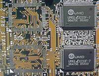

| Кэш-память (cache memory) предназначена для согласования скорости работы сравнительно медленных устройств (динамическая память, накопители) с относительно быстрым процессором. |  |
У современного процессора, работающего с умножением тактовой частоты, скорость работы внутренних блоков в 2 и более раз выше скорости остальной системы. Математический сопроцессор, устройство управления памятью, арифметико-логическое устройство работают на умноженной частоте, системная и внешняя память, вспомогательные микросхемы — на обычной частоте. Использование кэш-памяти позволяет избежать циклов ожидания в работе процессора, которые снижают производительность всей системы.
Кэш-память используется для временного хранения часто повторяющихся в программе инструкций и переходов с целью снижения частоты обращения к оперативной памяти. При обмене данными адреса, которые могут выскоре понадобиться процессору для обработки, обычно лежат рядом с обрабатываемыми в данный момент. Кэш-контроллер разместит весь блок данных в статической кэш-памяти.
Размер кэш-памяти процессора (кэш-память 1 уровня) — 0,5 Кбайт (80386), 16 Кбайт (486), 32 Кбайта (Pentium).
Начиная
с i486 на системной плате устанавливается внешняя кэш-память (кэш-память
2 уровня). Ее размер — до 256 Кбайт (i486) или до 512 Кбайт (Pentium).
Для кэш-памяти 2 уровня используются микросхемы статической памяти
SRAM с временем доступа 10–15 нс.